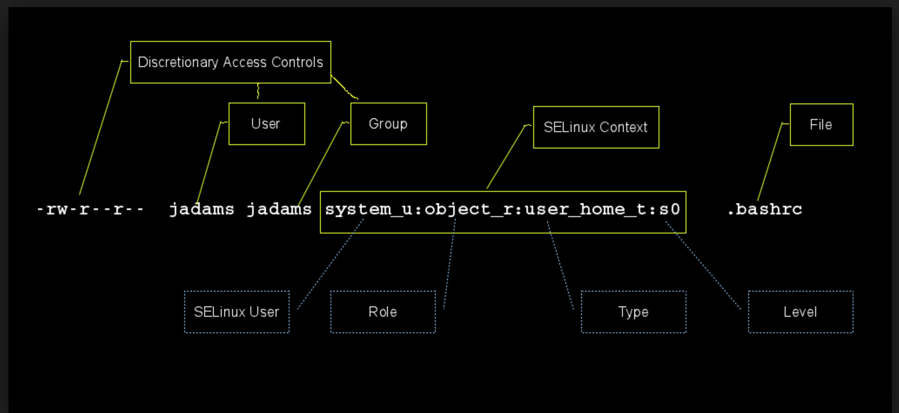

纸上得来终觉浅，绝知此事要躬行。
安全增强式 Linux，即SELinux(Security-Enhanced Linux)是一个 Linux 内核的安全模块，其提供了访问控制安全策略机制，包括了强制访问控制(Mandatory Access Control，MAC)。SELinux 是一组内核修改和用户空间工具，已经被添加到各种 Linux 发行版中。其软件架构力图将安全决策的执行与安全策略分离，并简化涉及执行安全策略的软件的数量。
1. SELinux 介绍
安全增强式 Linux（
SELinux）是一种强制访问控制的实现。它的作法是以最小权限原则为基础，在 Linux 核心中使用 Linux 安全模块。它并非一个 Linux 发行版，而是一组可以应用在类 Unix 操作系统（如 Linux、BSD 等）的修改。
SELinux更能遵从最小权限的理念- 安全增强式
SELinux是一个在内核中实践的强制访问控制安全性机制

两种访问控制
DAC：自主访问控制MAC：强制访问控制
SELinux有两种工作级别
strict: 每个进程都受到 selinux 的控制targeted: 仅有限个进程受到 selinux 控制，只监控容易被入侵的进程
1.1 为什么需要 SELinux
在未启用 SELinux 的情况下，要控制用户的文件访问权，唯有通过酌情访问控制（DAC）方法如文件权限或访问控制清单（ACL）。不论用户或程序都可以将不安全的文件权限赋予其它人，或反过来访问系统在正常运作下无须访问的部份。举个例说：
- 管理员不能控制用户：用户可以把谁都可读入的权限赋予敏感文件，例如
ssh金钥及惯常用来放置这些金钥的目录，~/.ssh/。 - 进程可以更改安全性属性：每位用户的邮件文件应该只供该用户读入，但邮件客户端软件有能力将它们改为谁都可读入。
- 进程继承用户的权限：假若
Firefox被木马程序所占用，它可能会阅读用户的私人ssh金钥，尽管它没有理由如此做。
基本上在传统 DAC 模式只在两个权限级别，root 及用户，而当中不能简易地实施最小权限的理念。很多由 root 引导 1 的进程在后期会撇除它们的权限并以受限制的用户身份来运行，有些则会在 chroot 的情况下执行，但这些安全措施都是酌情的。
1.2 解决方案
SELinux 更能遵从最小权限的理念。在缺省的 enforcing 情况下，一切均被拒绝，接着有一系列例外的政策来允许系统的每个元素（服务、程序、用户）运作时所需的访问权。当一项服务、程序或用户尝试访问或修改一个它不须用的文件或资源时，它的请求会遭拒绝，而这个行动会被记录下来。
由于 SELinux 是在内核中实践的，应用程序无须被特别编写或重写便可以采用 SELinux。当然，如果一个程序特别留意稍后所提及的 SELinux 错误码，它的运作可能会更畅顺。
理论上，下列样例方案可提供更高安全度：
- 局限只有某些获授权的程序可读入用户的
~/.ssh/目录 - 防止派发邮件程序更改拥有群组、群组设置或其它读档权限
- 阻止浏覧器读入用户的主目录
2. SELinux 的操作
2.1 SELinux 的三种模式
SELinux 拥有三个基本的操作模式，当中 Enforcing 是缺省的模式。
Enforcing- 这个缺省模式会在系统上启用并实施 SELinux 的安全性政策，拒绝访问及记录行动
Permissive- 在 Permissive 模式下，SELinux 会被启用但不会实施安全性政策，而只会发出警告及记录行动。Permissive 模式在排除 SELinux 的问题时很有用
Disabled- SELinux 已被停用
SELinux 的模式可以通过 Adminstration 选单里的 SELinux 图像管理界面、或者在命令行执行 system-config-selinux 来查看及更改（SELinux 图像管理界面是 policycoreutils-gui 组件的一部份，缺省是不会被安装的）。
2.2 获取当前 SELinux 运行状态
sestatus 命令
# sestatus
SELinux status: enabled
SELinuxfs mount: /selinux
Current mode: enforcing
Mode from config file: enforcing
Policy version: 21
Policy from config file: targetedgetenforce 命令
- 可能返回结果有三种：
Enforcing、Permissive和DisabledDisabled代表 SELinux 被禁用Permissive代表仅记录安全警告但不阻止可疑行为Enforcing代表记录警告且阻止可疑行为。
# getenforce
Disabled2.3 改变 SELinux 运行状态
临时修改
setenforce命令setenforce [ Enforcing | Permissive | 1 | 0 ]
- 注意事项
- 该命令可以立刻改变 SELinux 运行状态，在
Enforcing和Permissive之间切换，结果保持至关机。 - 若是在
setenforce 0之后服务或者程序依然无法运行，那么就可以肯定不是SELinux导致的。
- 该命令可以立刻改变 SELinux 运行状态，在
# 强制访问控制
setenforce 1
# 自主访问控制
setenforce 0永久修改
- 修改配置文件
/etc/sysconfig/selinux或者/etc/selinux/config SELINUX=disabled为主开关，只有它打开了，设定访问控制才有意义
# cat /etc/sysconfig/selinux
# This file controls the state of SELinux on the system.
# SELINUX= can take one of these three values:
# enforcing - SELinux security policy is enforced.
# permissive - SELinux prints warnings instead of enforcing.
# disabled - No SELinux policy is loaded.
SELINUX=disabled
# SELINUXTYPE= can take one of these two values:
# targeted - Targeted processes are protected,
# mls - Multi Level Security protection.
SELINUXTYPE=targeted2.4 布尔型规则
因为在
SELinux中有些类型没有被启动或者你需要关闭某些类型，这个时候你就需要使用下列命令来修改SELinux的类型了
获取类型状态
getsebool命令：- 语法：
getsebool [-a] [boolean]
# 获取所以类型及其运行状态
getsebool -a
# 获取某个类型及其运行状态
getsebool httpd_t修改类型状态
setsebool命令：- 语法：
setsebool [ -P] boolean value | bool1=val1 bool2=val2 ...
# 临时修改
setsebool httpd_t 1
# 永久修改
setsebool -P httpd_t 13. SELinux 政策
配置文件 /etc/sysconfig/selinux 还包含了 SELinux 运行策略的信息，通过改变变量 SELINUXTYPE 的值实现。
两种策略
targeted代表仅针对预制的几种网络服务和访问请求使用 SELinux 保护strict代表所有网络服务和访问请求都要经过 SELinux
注意事项
- 可以在
/etc/sysconfig/selinux中对其进行修改 - RHEL 和 Fedora 默认设置为
targeted，包含了对几乎所有常见网络服务的 SELinux 策略配置，已经默认安装并且可以无需修改直接使用。
# cat /etc/sysconfig/selinux
# This file controls the state of SELinux on the system.
# SELINUX= can take one of these three values:
# enforcing - SELinux security policy is enforced.
# permissive - SELinux prints warnings instead of enforcing.
# disabled - No SELinux policy is loaded.
SELINUX=disabled
# SELINUXTYPE= can take one of these two values:
# targeted - Targeted processes are protected,
# mls - Multi Level Security protection.
SELINUXTYPE=strict4. SELinux 访问控制
4.1 三种访问控制方法
- 强制类型（
TE）TE是针对型政策所采用的主要访问控制机制
- 基于⻆色的访问控制（
RBAC）- 它以
SELinux用户（未必等同 Linux 用户）为基础，但缺省的针对型政策并未采用它
- 它以
- 多层保障（
MLS）- 普遍不获采用，而且经常隐藏在缺省的针对型政策内
4.2 访问控制规则解析
所有进程及文件都拥有一个 SELinux 的安全性脉络，我们这里查看 Apache 的主页，来看看 SELinux 安全性脉络来看看它们如何运作的。
# 查看 Apache 的主页
# -Z 这个标旗在多数工具内都可用来显示 SELinux 安全性脉络（例如：ls -Z、 ps axZ 等）
# ls -Z /var/www/html/index.html
-rw-r--r-- username username system_u:object_r:httpd_sys_content_t /var/www/html/index.htmlSELinux 脉络栏
system_u:object_r:httpd_sys_content_t- 基于「用户：角色：类型：多层保障」
- 在上述例子里，「用户：角色：类型」栏都有显示，而「多层保障」是隐藏的
- 在缺省的针对型政策里，类型是用来实施「强制类型」的重要字段，在这里它是
httpd_sys_content_t
httpd进程的 SELinux 安全性脉络- 从类型栏可以看出
Apache在httpd_t这个类型本地内运行
- 从类型栏可以看出
# ps axZ | grep httpd
system_u:system_r:httpd_t 3234 ? Ss 0:00 /usr/sbin/httpdSELinux 安全机制
- 唯有相似的类型才可互相访问，因此以
httpd_t运行的Apache可以读入拥有httpd_sys_content_t类型的/var/www/html/index.html - 由于
Apache在httpd_t这个本地内运行但不属username这个用户，纵使/home/username/myfile.txt可供任何人读入，Apache却不能访问该文件，因为它的SELinux安全性脉络并不是httpd_t类型 - 倘若
Apache被人占用，又假设它仍未取得更改SELinux标签至另一个脉络的root权限，它将会不能引导httpd_t本地外的进程（藉此防止权限升级），或访问与httpd_t本地不相关的文件
5. 排除 SELinux 疑难
5.1 SELinux 拒接访问原因
SELinux 拒绝某个文件、进程或资源被访问的基要原因
- 一个被错误标签的文件
- 一个进程在错误的
SELinux安全性脉络下运行 - 政策出错，某个进程要访问一个在编写政策时意料不到的文件，并产生错误信息
- 一个入侵的企图
日志分析
- 日志档是排除任何疑难的关键，而 SELinux 亦不例外
SELinux缺省会通过 Linux 审计系统auditd将日志写在/var/log/audit/audit.log内，而该务服缺省为启用的- 假若
auditd长驻程序并未运行，信息将会被写进/var/log/messages SELinux的日志都以AVC这个关键字作标签，让grep等程序可轻易地把它们从其它信息中过滤出来。
日志分析工具
- 用
SELinux排除疑难工具协助你分析日志档，将它们转换为供人阅读的格式 SELinux排除疑难工具是由setroubleshoot组件所提供的- 这个工具包含一个以可读格式显示信息及解决方案的图像界面、一个桌面通报图示、与及一个长驻进程，
setroubleshootd，它负责查阅新的SELinux AVC警告并传送至通报图示
# 这个工具可以从 X 窗口图像管理员的「系统」选单或从命令行引导
sealert -b
# 不运行 X 服务器的人可以通过命令行产生供人阅读的报告
sealert -a /var/log/audit/audit.log > /path/to/mylogfile.txt5.2 重新标签文件
chcon: 这个指令可以用来更改一个或多个文件与目录的
SELinux安全性脉络，正如chown或chmod可以用来更改一个文件的拥有者或标准权限。
语法
chcon [OPTION]... CONTEXT FILE...chcon [OPTION]... [-u USER] [-r ROLE] [-t TYPE] FILE...chcon [OPTION]... --reference=RFILE FILE...
选项
-R：递归打标
举例
chcon -t httpd_sys_content_t index.html
实战演示
# 就以Apache为例，假设你想修改DocumentRoot以另一个位置来伺服网页，替换缺省的/var/www/html
#目录。譬如说我们在 /html 创建了一个目录（又或者挂载点），然后在那里创建一个 index.html文档：
mkdir /html
touch /html/index.html
# 查看selinux属性信息
# ls -Z /html/index.html
-rw-r--r-- root root user_u:object_r:default_t /html/index.html
# ls -Z | grep html
drwxr-xr-x root root user_u:object_r:default_t html
# 我们可以见到/html这个目录以及/html/index.html这个文件都拥有缺省的default_t安全性脉络类型。
# 如果我们打开浏览器并尝试查看该页，SELinux 将会正确地拒绝它们被访问并记录错误，因为该目录与文
# 件拥有不正确的安全性脉络。我们须要设置供 Apache 使用的 httpd_sys_content_t 正确安全性脉络。
# chcon -v --type=httpd_sys_content_t /html
context of /html changed to user_u:object_r:httpd_sys_content_t
# chcon -v --type=httpd_sys_content_t /html/index.html
context of /html/index.html changed to user_u:object_r:httpd_sys_content_t
# ls -Z /html/index.html
-rw-r--r-- root root user_u:object_r:httpd_sys_content_t /html/index.html
# ls -Z | grep html
drwxr-xr-x root root user_u:object_r:httpd_sys_content_t html
# 我们同样也可以利用 -R 这个回递标旗同时将它们的脉络设置：
chcon -Rv --type=httpd_sys_content_t /html
# 以这个方式更改安全性脉络在系统重新开机后仍会获保留，直至该部份文件系统被重新标签。
# 这个动作也算颇常，因此正确的解决方法，就是于测试后编写一条自定的规则，并把它与本地
# 的规则进行合并。它将会是原有的 200 多条规则外的一条规则。要作出永久性、能过渡文件
# 系统重新标签的安全性脉络改动，我们采用SELinux管理工具，或者在命令行执行semanage指令。
semanage fcontext -a -t httpd_sys_content_t "/html(/.*)?"
# 如此便会将 /html 以下的一切加入 httpd_sys_content_t 这个文件脉络类型。5.3 撤消缺省的安全性脉络
restorecon: 这个指令可以用来撤消为文件缺省的安全性脉络
语法
restorecon [-R] /path/to/somewhere
选项
-R：递归撤标
实战演示
# 让我们再次以 Apache 作为样例。设假有位用户在他的主目录内编辑了一个index.html档并将该文件
# 迁移（mv）至 DocumentRoot 的 /var/www/html 内。纵使复制（cp）这个指令普遍会沿用目标目
# 录或文件的安全性脉络，迁移（mv）指令则会保留源文件的安全性脉络。我们可以利用 chcon 这个指令
# 来更改问题文件的安全性脉络，但由于这些文件已经位于 Apache 缺省的 DocumentRoot内，我们只
# 须撤消这个目录或文件的安全性脉络便成了。要单单撤消 index.html 档的脉络，我们可以利用。
restorecon -v /var/www/html/index.html
# 如果要以回递的方式撤消整个目录的缺省安全性脉络
restorecon -Rv /var/www/html
# 除此之外，如果我们只想检查/var/www/html目录内有哪些文件的安全性脉络需要被撤消
# 我们在采用 restorecon 时可以应用 -n 这个标旗来防止重新标签的行动
restorecon -Rv -n /var/www/html6. 参考链接
送人玫瑰，手有余香！